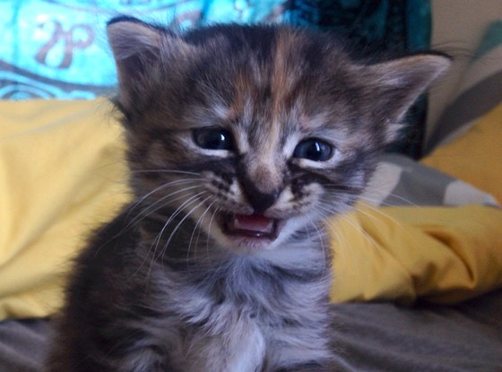

- Click 'PLAY' to start the game.
- Match at least 3 kitties by swapping them and destroy the pink background behind them.
- Simply click the icons you want to swap.
- You will get 10 points for each icon in the match. If an icon belongs to two matches, the points will be counted double.
- If you do not manage to destroy the entire pink background in 20 moves (or less) or if there are no more valid moves to make, you lose!
- The background will be destroyed only behind the matches directly created by you, not the ones that might follow. Similarly, you will only get points for this kind of matches.
- You can restart the game clicking the "New game" button
- When you finish the game, a kitty will make its appearence, but you will have to show a bit of patience.
Cat-ch3
A match-3 game full of kitties!

Everytime you use Internet Explorer, a kitty cries somewhere!
Stop animal cruelty and use literally any other browser.
Also, you get to play the actual game if you use another browser